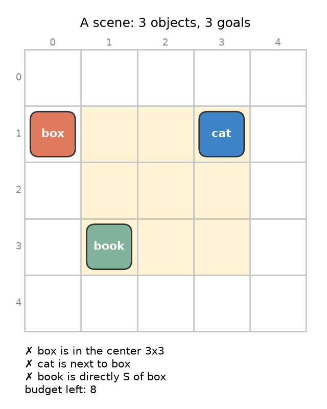
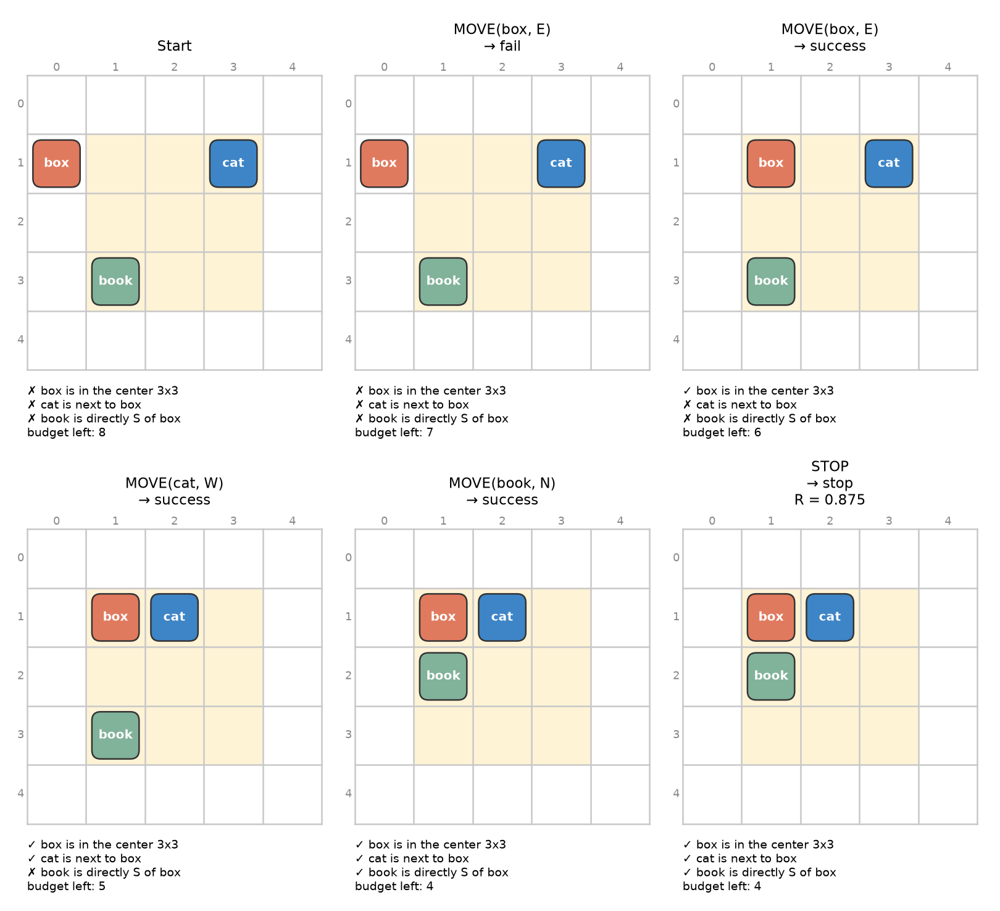
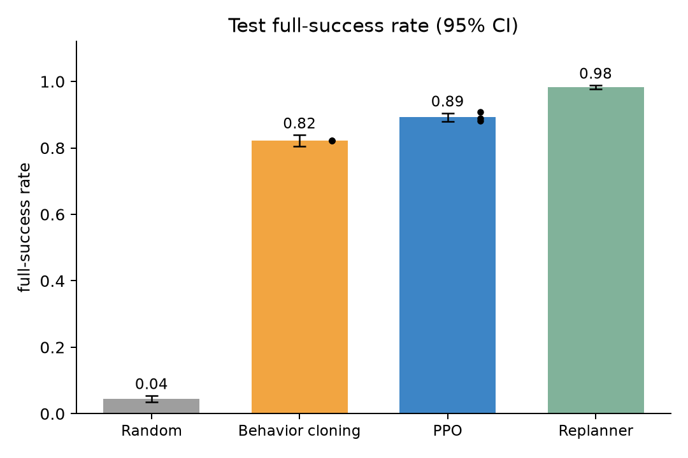
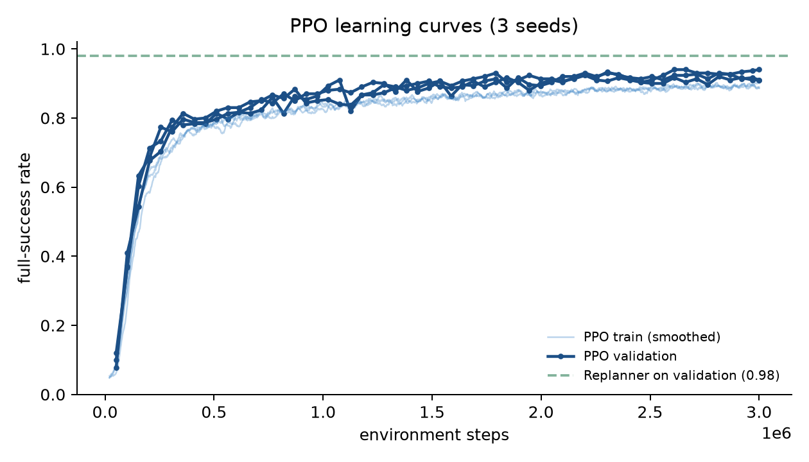
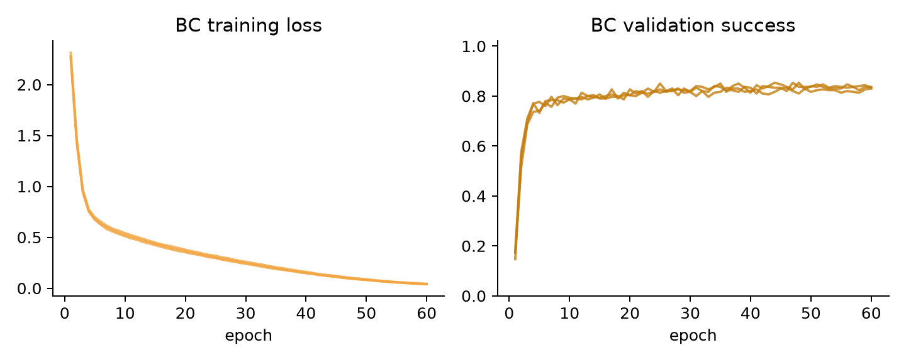
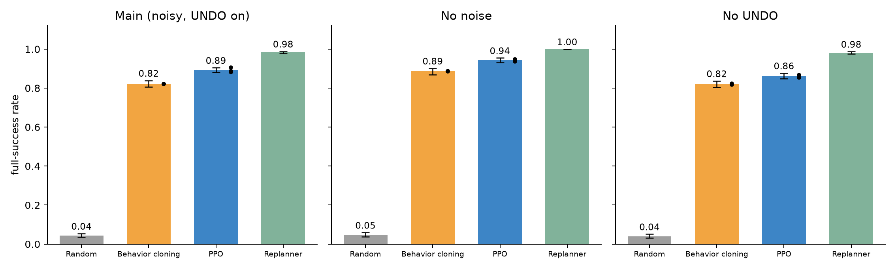
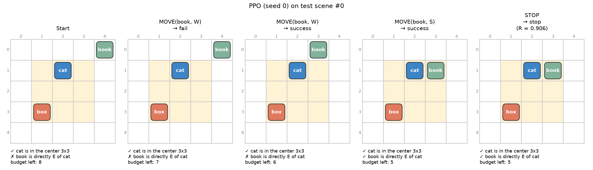

CPS 379 · Reinforcement Learning · Fall 2026 · Final project
Full Understanding of the Code
Budgeted Stochastic Scene Repair: fixing a tiny grid scene when edits can fail
Binayak Jha · solo project · code in scene-repair/
What this guide is for
Read it once top to bottom and you can explain every file, every rule and every number in
class. Each part starts with the idea in plain words, then shows the real code (copied
automatically from the source files), then says what each important line does.
Every number in this guide is read from the saved results files; none is typed by hand.
1. The problem in one paragraph
2. How the pieces fit
3. A walk through every file
4. The MDP mapped to code
5. How each policy works
6. How PPO works here, step by step
7. How to run it
8. The real results
9. Explain it in 30 seconds + professor questions
10. Limitations and deviations
1The problem in one paragraph
We have a 5×5 grid with 3 to 5 labeled objects (box, cat, book, lamp, cup), one per cell.
We are given 2 to 4 goals such as "box is in the center", "cat is next to box", or
"book is directly south of box". The agent fixes the scene by moving objects one cell at a
time (north, south, east, west). It can also UNDO its last move or STOP.
The catch: moves are unreliable. A legal move works 70% of the time, lands in a random
nearby cell 20% of the time ("jitter"), and does nothing 10% of the time ("fail"). The agent has a
budget of 8 actions. At the end it gets one score:
R = s × (0.75 + 0.25 × budget left / 8), where s is the share of goals met.
So: meet every goal, and do it with as few actions as possible.
Why this is an RL problem
Because edits can fail, you cannot just plan once and execute. After every action you must
look at what really happened and decide again: retry, repair, undo, or stop. That is a
sequential decision under uncertainty with a limited budget, which is exactly what RL is for.

The proposal's example scene. Shaded cells are the center 3×3. ✗ means the goal is not met yet.
The worked example from the proposal (it is also a unit test)

Box (0,1), cat (3,1), book (1,3). The first move fails, then three moves succeed, then STOP.
Four actions were paid for, so R = 1 × (0.75 + 0.25 × 4/8) = 0.875. The test
test_worked_example_from_the_proposal_gives_0_875 forces exactly these outcomes and checks every number.
Coordinates: (x, y), x grows to the east (right), y grows to the south (down), like rows on a page.
So "north" means y − 1.
2How the pieces fit
The project is a small Python package, scene_repair/, plus a few scripts that use it.
Think of it as five layers. Each layer only uses the layers above it, so you can read the code top to bottom.
One episode, as a loop
obs, info = env.reset(seed=..., options={"scene": scene}) # new puzzle, budget 8, empty undo buffer
done = False
while not done:
action = policy.act(obs, info) # every policy has this same one method
obs, reward, done, truncated, info = env.step(action)
# reward is 0 on every step except the last one, where it is s × (0.75 + 0.25 × b/8)
The one design rule that keeps everything simple
Every policy answers the same question, act(obs, info) → action number.
obs is the state as 243 numbers (for neural nets). info["state"] is the same state in
readable form (for the planner). info["action_mask"] says which of the 22 actions exist.
So the environment, the evaluator and the scripts never care which policy is playing.
3A walk through every file
Every file starts with a docstring that says its one job. Here they are, with their sizes:
{{FILE_TABLE}}
3.1 grid.py: the board
Positions are tuples (x, y). A layout is a tuple of positions, one per object, so
layout[0] is where the box is. Tuples cannot be changed, which means we can put layouts in sets
(the planner needs that) and we never change a layout by accident.
DIRECTIONS["S"] = (0, 1): south adds 1 to y. This is the single place that fixes the "y grows south" rule.
"Moore neighbors" just means the 8 touching cells, diagonals included. Jitter uses them.
3.2 constraints.py: the three goal types
{{CODE:scene_repair.constraints:is_satisfied}}
Center: both x and y are 1, 2 or 3.
Adjacent: Manhattan distance (|dx| + |dy|) is exactly 1, so diagonal does not count.
Direction: object i must sit on the exact cell you get by stepping from j in direction d.
Direction(book, box, "S") means book = box + (0, 1).
satisfaction_mask runs this for every goal (that is m), and fraction_satisfied is s.
moves_needed_at_least gives, for one goal, the fewest moves that could possibly fix it.
Each move shifts one object by one cell, so it can close a gap by at most 1. The planner uses this as its
"estimate" (it never over-estimates, which is what A* needs).
3.3 scenes.py: making puzzles and keeping splits apart
{{CODE:scene_repair.scenes:generate_scene}}
Witness first. Drop K objects on random cells, then pick goals that are true there. So every puzzle has a known solution.
Scramble. Make 1 to 6 random legal moves with no noise. Playing them backwards solves the puzzle, so a noise-free fix always fits in the budget.
Reject solved scenes, as the proposal says (continue means "try again").
_pick_constraints always includes at least one goal between two objects and never puts two goals on the same pair (so "cat south of box" and "cat next to box" never both appear; one would be redundant).
{{CODE:scene_repair.scenes:split_of_template}}
A template is the exact goal list, e.g. center(0)|adjacent(0,1)|direction(2,0,S).
We hash it into 10 buckets: 0–6 train, 7 validation, 8–9 test. So the same goal list never appears in two splits.
On top of that, each split draws from its own seed range (train 0+, val 1,000,000,000+, test 2,000,000,000+).
Validation ({{VAL_SCENES}} scenes, {{VAL_TEMPLATES}} templates) and test ({{TEST_SCENES}} scenes, {{TEST_TEMPLATES}} templates) are frozen as JSON in results/data/. Training scenes are drawn fresh forever.
3.4 env.py: the rules of the game (the most important file)
It is a normal Gymnasium environment: reset() starts an episode, step(action) returns
the five values obs, reward, terminated, truncated, info.
{{CODE:scene_repair.env:SceneRepairEnv.step}}
STOP is free: it does not touch the budget. It ends the episode.
MOVE and UNDO always cost 1, and the charge happens before we look at the outcome. So a failed or illegal move still costs.
If the budget reaches 0, the episode is forced to end.
Reward only at the end: reward stays 0.0 unless self.done. That is the proposal's "no intermediate reward".
truncated is always False: the budget rule is part of the task, so running out is a real ending (terminated), not a time-limit cut.
{{CODE:scene_repair.env:SceneRepairEnv._do_move}}
First, every MOVE saves the layout from before it in the undo buffer h (length one: the new save replaces the old).
divmod(action, 4) turns an action number into (object k, direction d). Example: action 9 = 4×2 + 1 = MOVE(book, S).
Illegal = target off the board or already occupied. Nothing moves; outcome "invalid".
One random number decides the outcome: below 0.7 → success, 0.7 to 0.9 → jitter, above 0.9 → fail.
{{CODE:scene_repair.env:jitter_cells}}
Jitter lands on an empty, on-board, 8-way neighbor of the intended cell v, judged on the grid before the move. The starting cell u is excluded.
If that list is empty, nothing moves (tested by test_jitter_with_no_candidates_leaves_layout_unchanged).
{{CODE:scene_repair.env:SceneRepairEnv._do_undo}}
UNDO restores the saved layout with no noise and empties the buffer. With an empty buffer it does nothing (still charged). There is never a refund.
Design choice: padding to 22 actions
Scenes have 3 to 5 objects, but a neural net needs a fixed number of outputs. So there are always
4 × 5 + 2 = 22 actions: 0–19 are MOVE(k, d) = 4k + d, 20 is UNDO, 21 is STOP. Actions for objects that do not
exist are switched off in info["action_mask"]; if one is picked anyway it counts as an invalid, charged move.
Off-board and occupied-target moves are not masked: they are real (bad) choices in the MDP, and the agent must learn to avoid them.
3.5 encoding.py: turning the state into numbers
A neural net needs a fixed-length list of numbers. The state (C, L, b, m, h, o) becomes 243 numbers:
Block
What it holds
Size
Objects
for each of 5 slots: present?, x as one-hot, y as one-hot, which of N/S/E/W is legal now, "pull" (dx, dy)
5 × 17 = 85
Goals C, mask m
for each of 4 slots: present?, kind, object i, object j, direction, met?, gap (dx, dy)
4 × 21 = 84
Budget b
one-hot of 0..8, and b / 8
10
Undo buffer h
has a saved layout?, then the saved layout (5 × 11)
One-hot = a row of zeros with a single 1 marking the value. x = 3 becomes 0 0 0 1 0.
{{CODE:scene_repair.encoding:object_pulls}}
Gap (per goal): how far object i still has to travel, in x and in y, to meet the goal.
Pull (per object): the gaps of all its unmet goals added up, so it says "which way this object wants to go".
If the object is the second one (j) in a goal, the gap counts negative, since moving j the other way closes the same gap.
These are hints computed only from C and L. They add no information the agent did not already have; they only
save the small net from learning arithmetic. Section 6.4 shows why we added them: without the pull hint PPO learned very slowly.
3.6 networks.py: the small neural net
{{CODE:scene_repair.networks:PolicyValueNet}}
The body is 2 layers of 128 units with tanh. Both heads read from it.
The policy head gives 22 scores ("logits"); softmax turns them into probabilities.
masked_fill(~action_mask, -1e9): switched-off actions get a score of −1,000,000,000, so their probability is 0.
The value head guesses the final reward from this state. Only PPO uses it. BC uses the same class and ignores it.
NetPolicy wraps a trained net so it has the usual act(obs, info). In evaluation it is greedy: it takes the most likely action.
3.7 evaluation.py: playing and scoring
{{CODE:scene_repair.evaluation:bootstrap_ci}}
A 95% CI (confidence interval) is a range that likely holds the true average.
Bootstrap: resample the test scenes with replacement 2,000 times, compute the average each time, and keep the middle 95%.
We resample whole scenes, not single episodes, because the {{ROLLOUTS}} rollouts of one scene are related. For BC and PPO,
each (seed, scene) pair is one unit, so seed-to-seed variation is inside the interval too.
3.8 The scripts and the tests
scripts/make_splits.py freezes validation, test and a "train-check" set (training scenes used only to measure overfitting).
scripts/train_bc.py, scripts/train_ppo.py train one seed each and keep the network that does best on validation.
scripts/evaluate.py plays every policy on the same test scenes with the same rollout seeds and writes results/test_results.json and results/results_table.md.
scripts/make_figures.py and scripts/make_episode_gif.py draw everything in figures/ with matplotlib.
tests/: {{TESTS}}. They cover predicates and coordinates, collisions, failure, jitter candidates and the empty fallback,
undo (restore, clear, length one, empty), budget charging, STOP, forced termination, terminal reward, padding and masking,
the no-UNDO switch, the noise rates, the reset generator, split separation, the planner, and the PPO advantage math.
tests/helpers.py has a FakeRandom that lets a test force "success", "jitter" or "fail".
4The MDP mapped to code
An MDP (Markov decision process) is the formal name for "states, actions, how actions change the state, and rewards".
Here is each piece and the exact line of code that implements it.
MDP piece
In the proposal
In the code
State
(C, L, b, m, h, o), all observed
env.state() returns all six; encoding.encode turns them into 243 numbers
Goals C
Center3x3, ManhattanAdj, CardinalAdj
Constraint + is_satisfied in constraints.py
Layout L
one cell per object, (x, y), y south
self.layout, a tuple of (x, y); grid.DIRECTIONS
Budget b
B₀ = 8; MOVE/UNDO cost 1; STOP free
self.budget -= 1 in step, skipped for STOP
Mask m
recomputed from C and L
satisfaction_mask(constraints, layout)
Undo buffer h
length one, starts empty
self.undo_buffer; set in _do_move, used and cleared in _do_undo
Why the state is "Markov" (no hidden memory needed)
Everything that affects the future is in (C, L, b, m, h, o). The undo buffer is part of the state, so the agent never needs to remember
its history. That is why a simple feed-forward net (no memory) is enough for both BC and PPO.
Episode length is at most 9 steps (8 paid actions, then the forced end; or STOP earlier). The test scenes need on average
{{MEAN_FIX}} noise-free moves to fix (shortest fix lengths: {{FIX_DIST}}). Scenes: {{OBJ_DIST}}; {{GOAL_DIST}}.
5How each policy works, in plain words
Random
Picks any allowed action uniformly. It is the floor: anything useful must beat it.
In one line: pretend moves never fail, find the shortest fix, do its first step, look at what really happened, and plan again.
A* search explores layouts in order of "moves so far + an estimate of moves left". The estimate is the largest
moves_needed_at_least over the goals; it never over-estimates, so the first full fix A* finds is a shortest one.
It may also use UNDO as a first step, since UNDO is the one noise-free action.
It never searches deeper than the budget left, and stops after {{EXP_LIMIT}} expanded layouts. If no full fix fits, it heads for the best
partial layout it saw. When the scene is solved it says STOP.
It uses the same visible goals and the same exact checker as everyone else, but it reads the readable state instead of the 243 numbers.
{{CODE:scene_repair.policies.planner:plan}}
heap is a priority queue: heappop always gives the layout with the smallest f = g + estimate.
came_from remembers how we reached each layout, so at the end we walk backwards to read off the action list.
if g == budget: continue stops the search from planning more moves than we can pay for.
Behavior cloning (BC)
Copy the planner. We let the planner play {{BC_DEMO_EPISODES}} training episodes with noise per seed and save every
(state, planner's action) pair: {{BC_DEMO_PAIRS}} pairs for seeds 0, 1, 2. Because moves fail and jitter, these demos include
messy recovery states, not just perfect paths. Then we train the network as a classifier ("given this state, which action did the planner pick?")
with cross-entropy loss. It is reactive: it only looks at the current state and does no search.
{{CODE:scene_repair.policies.bc:train_bc_epoch}}
PPO
Learns from its own experience and the final reward only. No demos, no search. Next section explains it step by step.
6How PPO works here, step by step
The idea in four sentences
Play a batch of episodes with the current policy. For each action, ask "did things turn out better or worse than my value head expected?"
That difference is the advantage. Make good-advantage actions more likely and bad ones less likely, but only by a little each time (that is the
"proximal" part). Repeat.
6.1 Play
32 environments run side by side for 64 steps each, so one batch is 2,048 steps. Actions are sampled from the policy's probabilities
(so it explores). For each step we save the observation, mask, action, the action's log-probability, the value guess, the reward and whether the episode ended.
A finished environment restarts at once on a new random training scene.
delta = reward + value of next state − value of this state: a one-step "surprise".
GAE adds up these surprises going backwards, shrinking older ones by λ = 0.95. With γ = 1 and λ = 1 this would be exactly
"final reward − value guess" (a unit test checks that).
not_done stops the sum at the end of an episode, so one puzzle's result never leaks into the next.
γ (gamma, the discount) = 1 because episodes are at most 9 steps and only the final reward matters; the budget term already rewards being quick.
6.3 Learn: the clipped objective
{{CODE:scene_repair.policies.ppo:ppo_update}}
ratio = new probability of the action ÷ old probability. 1 means "unchanged".
Clipping: clamp(ratio, 0.8, 1.2) and the min mean the update gets no extra credit for moving the probability more than 20%. That keeps each update small and stable.
Value loss trains the value head to predict the real return.
Entropy bonus (coefficient 0.03) rewards keeping some randomness, so the policy keeps exploring and does not lock in early.
Advantages are normalised (mean 0, std 1) for steadier step sizes. Gradients are clipped at norm 0.5. Learning rate starts at 0.001 and shrinks linearly to 0.
Each batch is used for 4 passes ("epochs") in mini-batches of 512.
6.4 How PPO was tuned (validation only)
All tuning used seed 0 and the frozen validation set; the test set was never looked at. Full notes and logs are in results/tuning/.
Round 1 (no pull hint): every setting was slow, the best reached 0.385 validation success after about 0.7M steps.
We saw that the net had to learn "goal is east of object k → pick MOVE(k, E)" from raw one-hot positions.
Fix: add the per-object pull hint (computed from C and L only).
Rounds 2–3 (with the hint): settings reached 0.865–0.915 best validation success. All were within the noise of a 200-scene check, so
we picked the steadiest: learning rate 0.001 annealed to 0, entropy 0.03, hidden size 128.
Final runs: {{PPO_STEPS}} environment steps per seed, 3 seeds ({{PPO_STEPS_TOTAL}} steps total), about {{PPO_MINUTES}} minutes per seed on one CPU core.
We checked validation every 25 updates and kept the best network.
Why not just train on the test set?
Picking settings or checkpoints by test score would make the test score optimistic. So: tune on validation, choose checkpoints on validation, and look at test once at the end.
7How to run it
cd scene-repair
python -m venv .venv && source .venv/bin/activate
pip install -r requirements.txt
python -m pytest -q tests # the unit tests (a few seconds)
python run_all.py --quick # tiny end-to-end check, about 1 minute, writes results/quick/
python run_all.py # the full study, about {{TOTAL_MIN}} minutes on 8 CPU cores
python docs/build_guide.py # rebuild this guide from the saved results
Single pieces: python scripts/train_ppo.py --seed 1, python scripts/train_bc.py --seed 0 --variant no_undo,
python scripts/evaluate.py --variants main. All knobs live in scene_repair/settings.py.
Hardware used for the numbers below: {{CPU}}, {{CORES}} cores, no GPU, Python {{PYVER}}, PyTorch {{TORCH}}.
The full run took {{TOTAL_MIN}} minutes in total, of which {{TRAIN_MIN}} minutes were training (up to 7 jobs at once).
8The real results
Test set: {{TEST_SCENES}} scenes × {{ROLLOUTS}} rollouts = {{TEST_EPISODES}} episodes per policy (per seed for BC and PPO), same scenes and rollout seeds for every policy.
Brackets are 95% bootstrap CIs. "Actions used" counts paid actions (STOP is free).
{{RESULTS_TABLE}}

Test full-success rate. Error bars are 95% CIs; black dots are the 3 training seeds.
What this means
The replanner wins ({{PLANNER_SUCC}} full success). The proposal said a planner win would be a valid result, and it is the honest result here.
It has an exact model of the rules (minus the noise) and searches, and these puzzles are short (a {{MEAN_FIX}}-move fix on average), so search is cheap and strong.
PPO is second ({{PPO_SUCC}}), clearly ahead of behavior cloning ({{BC_SUCC}}); their CIs do not overlap. PPO learned only from the final reward, no demos, no search.
BC is below its own teacher. It copies the planner's actions but cannot search, so small copying mistakes add up, and once it makes one it reaches states the planner rarely visited.
Random almost never solves a scene ({{RANDOM_SUCC}}), which shows the task is not trivial.
Efficiency: the planner uses {{PLANNER_ACT}} paid actions on average, PPO {{PPO_ACT}}, BC {{BC_ACT}}. Fewer actions means more budget left, which is why mean R follows the same order.
UNDO is almost never used by any trained or planning policy (last column). After a jitter, a normal move usually repairs things just as cheaply as UNDO.
Each training seed, and train vs validation (overfitting check)
{{SEED_TABLE}}
All three seeds land close together for both learned policies, so the result is not one lucky run.
Overfitting check: BC does noticeably better on training scenes than on validation for seed 0 (it memorises its demos; its training loss keeps falling in the curve below while validation success stops improving).
PPO scores about the same on training, validation and test scenes, so it generalises to goal lists it never saw in training.
(Validation here uses different rollout seeds from the ones used to pick checkpoints, which is why these numbers differ slightly from the training logs.)

PPO success while training (light, smoothed) and on validation (dark dots), 3 seeds. Dashed: the replanner on the same validation scenes.

BC: training loss keeps falling while validation success flattens out early.
Ablations: where does the difficulty come from?
Each setting retrains BC and PPO from scratch (3 seeds; PPO for 2,000,000 steps) and re-runs the planner and random on the same test scenes.
{{ABLATION_TABLE}}

Full success on the test set for each setting.
What the ablations say
Turning noise off helps everyone: planner {{PLANNER_SUCC}} → {{DETERMINISTIC_PLANNER_SUCC}}, PPO {{PPO_SUCC}} → {{DETERMINISTIC_PPO_SUCC}}, BC {{BC_SUCC}} → {{DETERMINISTIC_BC_SUCC}}.
So noise costs the planner about 2 points and the learners about 5–6 points. But even with no noise, the learned policies still miss some scenes, so part of their gap is in
learning the mapping from state to action, not only in handling noise.
Removing UNDO changes nothing for the planner ({{NO_UNDO_PLANNER_SUCC}}) or BC ({{NO_UNDO_BC_SUCC}}). PPO is lower ({{NO_UNDO_PPO_SUCC}}), but main-setting PPO used
UNDO essentially never, so this drop is not caused by losing UNDO. The likely reason is that ablation PPO runs trained for 2,000,000 steps instead of 3,000,000
(to save compute) and the run-to-run spread. Honest reading: UNDO does not matter in this task as designed.
Compute, reported separately (as the proposal promised)
Planner search: {{PLANNER_MS}} ms per decision on average; {{PLANNER_EXP}} layouts expanded over {{PLANNER_DECISIONS}} test decisions (limit {{EXP_LIMIT}} per decision).
BC demonstrations: {{BC_DEMO_EPISODES}} planner episodes per seed ({{BC_DEMO_PAIRS}} state-action pairs); about {{BC_MINUTES}} minutes per seed including demo collection.
PPO: {{PPO_STEPS}} environment steps per seed, no demos, no search; about {{PPO_MINUTES}} minutes per seed.
One real test episode played by PPO

The first test scene where a move went wrong and PPO still finished. Animated version: figures/ppo_episode.gif.
9Explain it in 30 seconds
Say this
"I built a small RL benchmark: fix a 5×5 grid scene so it meets goals like 'book directly south of box', with only 8 paid actions,
where each move works 70% of the time, jitters 20% and fails 10%. The agent sees everything and gets one reward at the end: the share of goals met,
scaled up for leftover budget. I compared four players on the same {{TEST_SCENES}} held-out scenes: random, an A* replanner that replans after every outcome,
behavior cloning of that planner, and PPO. The planner wins with {{PLANNER_SUCC}} full success; PPO, learning only from the end reward, gets {{PPO_SUCC}} and beats
behavior cloning at {{BC_SUCC}}. Turning noise off helps everyone, and turning UNDO off changes almost nothing, so here the hard part is
noise plus learning the state-to-action mapping, not undoing."
Likely professor questions, with answers
Q: Why does the planner beat PPO? Isn't that bad for an RL project?
A: No. The proposal said a planner win is a valid result. The planner is given a near-perfect model of the rules and the puzzles are short, so search is cheap and very strong. PPO had to discover everything from a single end-of-episode number. Getting to {{PPO_SUCC}} that way, and beating imitation of the planner, is the interesting part.
Q: Why does PPO beat behavior cloning, when BC copies the better player?
A: BC only copies; it does no search. Small mistakes put it in states the planner rarely reached, and it has no signal for what to do there. PPO trains on its own mistakes and is graded on the real reward, so it learns to recover.
Q: Why PPO and not DQN?
A: The action set is small and discrete, which suits both. PPO handles the action mask cleanly (masked softmax), works well with on-policy terminal rewards, and has fewer moving parts to explain (no replay buffer, no target network). The proposal committed to PPO.
Q: Is the 'pull' hint cheating?
A: No. It is computed only from the goals C and the layout L, which the agent already sees, and BC gets the exact same numbers. It is feature engineering, like normalising inputs. Without it PPO reached only 0.385 validation success in tuning; that is documented in results/tuning/.
Q: How do you know you did not tune on the test set?
A: Every setting and every checkpoint was chosen with the validation set. The test set was used once, in scripts/evaluate.py, after training finished. Splits are disjoint by seed range and by goal-list template.
Q: Why is the reward only at the end? Isn't that hard for RL?
A: That is what the proposal specified: no shaping. Episodes are at most 9 steps, so credit assignment is short. The value head and GAE turn the single end reward into a per-step advantage.
Q: What do the confidence intervals mean?
A: 95% bootstrap intervals: resample the test scenes 2,000 times and take the middle 95% of averages. For BC and PPO each (seed, scene) is resampled, so seed variation is included. Per-seed numbers are in the seed table.
Q: Why is UNDO almost never used?
A: After a jitter the object is usually one cell from where it should be. A normal move fixes that for the same price as UNDO, and sometimes makes progress at the same time. The no-UNDO ablation confirms the planner and BC do not change.
Q: What is the hardest part for the learned policies?
A: Mapping the state to the right object and direction. With noise off they still fail about 5–11% of scenes, while the planner is perfect. In the main setting, of PPO's {{PPO_FAILS}} failed test episodes (over 3 seeds), {{PPO_STOPPED}} were STOP with a goal still unmet and {{PPO_OOB}} ran out of budget; PPO wastes {{PPO_WASTE}} actions per episode on invalid moves or empty UNDOs (BC: {{BC_WASTE}}, planner: {{PLANNER_WASTE}}). Details: results/failure_analysis.json.
Q: Could PPO match the planner with more training?
A: Maybe a little: the learning curves had mostly flattened after about 2 million steps. But the planner has a model and searches; a reactive network would likely need more capacity or a better input design to fully close the gap.
10Limitations and deviations from the proposal
Limitations
The puzzles are easy. Following the proposal's reset recipe, many scrambles move objects no goal cares about, so the shortest fix is often 1 or 2 moves ({{FIX_DIST}}). Harder resets would separate the policies more.
The noise is made up. 0.7 / 0.2 / 0.1 are modelling assumptions, not measurements of Imagine or any real editor (as the proposal says).
Hints. The observation includes computed hints (legal moves, gaps, pulls). They add no new information but they do make learning easier, and results without them would be much worse.
Ablations used fewer PPO steps (2M instead of 3M), so small PPO differences between settings should not be over-read.
The planner is near-perfect because it has the exact rules. In a real editor the model would be imperfect and the comparison could change.
Only three seeds per learned policy, on one CPU machine. No HPC was used; GRPO (optional in the proposal) was not attempted.
The frozen parser from language to goals is outside this project: goals are given directly, as the proposal scoped it.
Deviations from the proposal, and why
Code layout: the proposal sketched rl_env.scene_env.SceneEnv; the code is scene_repair.env.SceneRepairEnv with the same Gymnasium five-value interface. The old public repo (rl-scene-env) still holds the earlier one-step environment and was not changed.
Planner search: A* with an admissible estimate (allowed by "BFS or greedy" in spirit: it finds the same shortest plans as BFS, just faster), with an expansion limit of {{EXP_LIMIT}} per decision. On the test set it hit that limit {{PLANNER_LIMIT_HITS}} times in {{PLANNER_DECISIONS}} decisions (the largest single search expanded far fewer layouts).
Undo buffer rule detail: every MOVE, including failed and invalid ones, saves the pre-move layout (a literal reading of "a MOVE saves its pre-action layout"). So UNDO after a failed move is a charged no-op.
"Template" split: a template is defined as the exact goal list. Hashing it decides the split, so no goal list is shared between train, validation and test.
Padding choice (the proposal asked to document it): 22 actions always; missing-object actions masked, and charged as invalid if chosen anyway.
Number of goals and objects: the proposal does not fix them; we use 3–5 objects and 2–4 goals, at least one of them relational.
Added observation hints (pull, gap, legal-move flags), for the reason given in section 6.4.
Tiny glossary
Policy: the rule that picks an action from a state. Episode: one puzzle from start to STOP or empty budget.
Advantage: how much better an action turned out than expected. Value head: the part of the net that guesses the final reward.
Entropy: how spread-out the action probabilities are (high = more random). One-hot: zeros with a single 1 marking a value.
A*: a search that explores the most promising options first using a safe estimate of the remaining cost. Bootstrap CI: a confidence range found by resampling the data many times.
Ablation: turning one feature off to see how much it matters. Seed: the number that fixes the randomness so a run can be repeated.